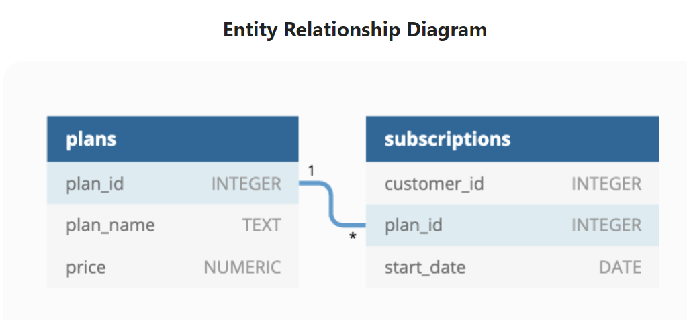

Case Study #3 - Foodie-Fi

Introduction
Subscription based businesses are super popular and Danny realised that there was a large gap in the market - he wanted to create a new streaming service that only had food related content - something like Netflix but with only cooking shows!
Danny finds a few smart friends to launch his new startup Foodie-Fi in 2020 and started selling monthly and annual subscriptions, giving their customers unlimited on-demand access to exclusive food videos from around the world!
Danny created Foodie-Fi with a data driven mindset and wanted to ensure all future investment decisions and new features were decided using data. This case study focuses on using subscription style digital data to answer important business questions.
Available Data
Danny has shared the data design for Foodie-Fi and also short descriptions on each of the database tables - our case study focuses on only 2 tables but there will be a challenge to create a new table for the Foodie-Fi team.
All datasets exist within the foodie_fi database schema - be sure to include this reference within your SQL scripts as you start exploring the data and answering the case study questions.
Entity Relationship Diagram

Table 1: plans
Customers can choose which plans to join Foodie-Fi when they first sign up.
Basic plan customers have limited access and can only stream their videos and is only available monthly at $9.90
Pro plan customers have no watch time limits and are able to download videos for offline viewing. Pro plans start at $19.90 a month or $199 for an annual subscription.
Customers can sign up to an initial 7 day free trial will automatically continue with the pro monthly subscription plan unless they cancel, downgrade to basic or upgrade to an annual pro plan at any point during the trial.
When customers cancel their Foodie-Fi service - they will have a churn plan record with a null price but their plan will continue until the end of the billing period.
| plan_id | plan_name | price |
|---|---|---|
| 0 | trial | 0 |
| 1 | basic monthly | 9.90 |
| 2 | pro monthly | 19.90 |
| 3 | pro annual | 199 |
| 4 | churn | null |
Table 2: subscriptions
Customer subscriptions show the exact date where their specific plan_id starts.
If customers downgrade from a pro plan or cancel their subscription - the higher plan will remain in place until the period is over - the start_date in the subscriptions table will reflect the date that the actual plan changes.
When customers upgrade their account from a basic plan to a pro or annual pro plan - the higher plan will take effect straightaway.
When customers churn - they will keep their access until the end of their current billing period but the start_date will be technically the day they decided to cancel their service.
| customer_id | plan_id | start_date |
|---|---|---|
| 1 | 0 | 2020-08-01 |
| 1 | 1 | 2020-08-08 |
| 2 | 0 | 2020-09-20 |
| 2 | 3 | 2020-09-27 |
| 11 | 0 | 2020-11-19 |
| 11 | 4 | 2020-11-26 |
| 13 | 0 | 2020-12-15 |
| 13 | 1 | 2020-12-22 |
| 13 | 2 | 2021-03-29 |
| 15 | 0 | 2020-03-17 |
| 15 | 2 | 2020-03-24 |
| 15 | 4 | 2020-04-29 |
| 16 | 0 | 2020-05-31 |
| 16 | 1 | 2020-06-07 |
| 16 | 3 | 2020-10-21 |
| 18 | 0 | 2020-07-06 |
| 18 | 2 | 2020-07-13 |
| 19 | 0 | 2020-06-22 |
| 19 | 2 | 2020-06-29 |
| 19 | 3 | 2020-08-29 |
Interactive SQL Session
The Dataset for this case study can be accessed from here. I will be using MySQL to solve this case study. In order to solve yourself this case study, simply go to the above link and choose MySQL Dialect (version > 8, if using MySQL version higher than 8 locally), copy & paste the Database schema into MySQL.
Here is the snapshot of it.
CREATE SCHEMA foodie_fi;
USE foodie_fi;
CREATE TABLE plans (
plan_id INTEGER,
plan_name VARCHAR(13),
price DECIMAL(5,2)
);
INSERT INTO plans
(plan_id, plan_name, price)
VALUES
('0', 'trial', '0'),
('1', 'basic monthly', '9.90'),
('2', 'pro monthly', '19.90'),
('3', 'pro annual', '199'),
('4', 'churn', null);
CREATE TABLE subscriptions (
customer_id INTEGER,
plan_id INTEGER,
start_date DATE
);
INSERT INTO subscriptions
(customer_id, plan_id, start_date)
VALUES
('1', '0', '2020-08-01'),
('1', '1', '2020-08-08'),
('2', '0', '2020-09-20'),
('2', '3', '2020-09-27'),
('3', '0', '2020-01-13'),
('3', '1', '2020-01-20'),
('4', '0', '2020-01-17'),
('4', '1', '2020-01-24'),
('4', '4', '2020-04-21'),
('5', '0', '2020-08-03'),
('5', '1', '2020-08-10'),
('6', '0', '2020-12-23'),
('6', '1', '2020-12-30'),
('6', '4', '2021-02-26'),
('7', '0', '2020-02-05'),
('7', '1', '2020-02-12'),
('7', '2', '2020-05-22'),
('8', '0', '2020-06-11'),
('8', '1', '2020-06-18'),
('8', '2', '2020-08-03'),
('9', '0', '2020-12-07'),
('9', '3', '2020-12-14'),
('10', '0', '2020-09-19'),
('10', '2', '2020-09-26'),
('11', '0', '2020-11-19'),
('11', '4', '2020-11-26'),
('12', '0', '2020-09-22'),
('12', '1', '2020-09-29'),
('13', '0', '2020-12-15'),
('13', '1', '2020-12-22')Case Study Questions
This case study is split into an initial data understanding question before diving straight into data analysis questions before finishing with 1 single extension challenge.
A. Customer Journey
Based off the 8 sample customers provided in the sample from the subscriptions table, write a brief description about each customer’s onboarding journey.
Try to keep it as short as possible - you may also want to run some sort of join to make your explanations a bit easier!
B. Data Analysis Questions
How many customers has Foodie-Fi ever had?
What is the monthly distribution of trial plan start_date values for our dataset - use the start of the month as the group by value.
What plan start_date values occur after the year 2020 for our dataset? Show the breakdown by count of events for each plan_name.
What is the customer count and percentage of customers who have churned rounded to 1 decimal place?
How many customers have churned straight after their initial free trial - what percentage is this rounded to the nearest whole number?
What is the number and percentage of customer plans after their initial free trial?
What is the customer count and percentage breakdown of all 5 plan_name values at 2020-12-31?
How many customers have upgraded to an annual plan in 2020?
How many days on average does it take for a customer to an annual plan from the day they join Foodie-Fi?
Can you further breakdown this average value into 30 day periods (i.e. 0-30 days, 31-60 days etc)
How many customers downgraded from a pro monthly to a basic monthly plan in 2020?
C. Challenge Payment Question
The Foodie-Fi team wants you to create a new payments table for the year 2020 that includes amounts paid by each customer in the subscriptions table with the following requirements:
- monthly payments always occur on the same day of month as the original start_date of any monthly paid plan
- upgrades from basic to monthly or pro plans are reduced by the current paid amount in that month and start immediately
- upgrades from pro monthly to pro annual are paid at the end of the current billing period and also starts at the end of the month period
- once a customer churns they will no longer make payments
Example outputs for this table might look like the following:
| customer_id | plan_id | plan_name | payment_date | amount | payment_order |
|---|---|---|---|---|---|
| 1 | 1 | basic monthly | 2020-08-08 | 9.90 | 1 |
| 1 | 1 | basic monthly | 2020-09-08 | 9.90 | 2 |
| 1 | 1 | basic monthly | 2020-10-08 | 9.90 | 3 |
| 1 | 1 | basic monthly | 2020-11-08 | 9.90 | 4 |
| 1 | 1 | basic monthly | 2020-12-08 | 9.90 | 5 |
| 2 | 3 | pro annual | 2020-09-27 | 199.00 | 1 |
| 13 | 1 | basic monthly | 2020-12-22 | 9.90 | 1 |
| 15 | 2 | pro monthly | 2020-03-24 | 19.90 | 1 |
| 15 | 2 | pro monthly | 2020-04-24 | 19.90 | 2 |
| 16 | 1 | basic monthly | 2020-06-07 | 9.90 | 1 |
| 16 | 1 | basic monthly | 2020-07-07 | 9.90 | 2 |
| 16 | 1 | basic monthly | 2020-08-07 | 9.90 | 3 |
| 16 | 1 | basic monthly | 2020-09-07 | 9.90 | 4 |
| 16 | 1 | basic monthly | 2020-10-07 | 9.90 | 5 |
| 16 | 3 | pro annual | 2020-10-21 | 189.10 | 6 |
| 18 | 2 | pro monthly | 2020-07-13 | 19.90 | 1 |
| 18 | 2 | pro monthly | 2020-08-13 | 19.90 | 2 |
| 18 | 2 | pro monthly | 2020-09-13 | 19.90 | 3 |
| 18 | 2 | pro monthly | 2020-10-13 | 19.90 | 4 |
| 18 | 2 | pro monthly | 2020-11-13 | 19.90 | 5 |
| 18 | 2 | pro monthly | 2020-12-13 | 19.90 | 6 |
| 19 | 2 | pro monthly | 2020-06-29 | 19.90 | 1 |
| 19 | 2 | pro monthly | 2020-07-29 | 19.90 | 2 |
| 19 | 3 | pro annual | 2020-08-29 | 199.00 | 3 |
D. Outside The Box Questions
The following are open ended questions which might be asked during a technical interview for this case study - there are no right or wrong answers, but answers that make sense from both a technical and a business perspective make an amazing impression!
How would you calculate the rate of growth for Foodie-Fi?
What key metrics would you recommend Foodie-Fi management to track over time to assess performance of their overall business?
What are some key customer journeys or experiences that you would analyse further to improve customer retention?
If the Foodie-Fi team were to create an exit survey shown to customers who wish to cancel their subscription, what questions would you include in the survey?
What business levers could the Foodie-Fi team use to reduce the customer churn rate? How would you validate the effectiveness of your ideas?
Let’s start solving them.
A. Customer Journey
Based off the 8 sample customers provided in the sample from the subscriptions table, write a brief description about each customer’s onboarding journey.
Try to keep it as short as possible - you may also want to run some sort of join to make your explanations a bit easier!
SQL Query:
SELECT
S.customer_id, P.plan_name, P.price, S.start_date
FROM Subscriptions AS S
JOIN Plans AS P ON P.plan_id = S.plan_id
WHERE customer_id IN (1,2,3,4,5,6,7,8);Output:
| customer_id | plan_name | price | start_date |
|---|---|---|---|
| 1 | trial | 0.00 | 2020-08-01 |
| 1 | basic monthly | 9.90 | 2020-08-08 |
| 2 | trial | 0.00 | 2020-09-20 |
| 2 | pro annual | 199.00 | 2020-09-27 |
| 3 | trial | 0.00 | 2020-01-13 |
| 3 | basic monthly | 9.90 | 2020-01-20 |
| 4 | trial | 0.00 | 2020-01-17 |
| 4 | basic monthly | 9.90 | 2020-01-24 |
| 4 | churn | 2020-04-21 | |
| 5 | trial | 0.00 | 2020-08-03 |
| 5 | basic monthly | 9.90 | 2020-08-10 |
| 6 | trial | 0.00 | 2020-12-23 |
| 6 | basic monthly | 9.90 | 2020-12-30 |
| 6 | churn | 2021-02-26 | |
| 7 | trial | 0.00 | 2020-02-05 |
| 7 | basic monthly | 9.90 | 2020-02-12 |
| 7 | pro monthly | 19.90 | 2020-05-22 |
| 8 | trial | 0.00 | 2020-06-11 |
| 8 | basic monthly | 9.90 | 2020-06-18 |
| 8 | pro monthly | 19.90 | 2020-08-03 |
Customer 1 signed up on ‘2020-08-01’ for free-trial and on ‘2020-08-08’ customer took the basic monthly plan as the system automatically upgrades to pro monthly plan.
Customer 2 signed up on ‘2020-09-20’ for free trial and on ‘2020-09-27’ customer upgraded to pro annual subscription.
Customer 3 signed up on ‘2020-01-13’ for free trial and on ‘2020-01-20’ customer took the basic monthly plan instead of going for the pro monthly plan as what system automatically upgrades to.
Customer 4 signed up on ‘2020-01-17’ for free trial, on ‘2020-01-24’ customer took the basic monthly plan and then churned out on ‘2020-0421’ (after 3 months of free-trial).
Customer 5 signed up on ‘2020-08-03’ for free-trial and on ‘2020-08-10’ customer took the basic monthly plan instead of going for the pro monthly plan as what system automatically upgrades to.
Customer 6 signed up on ‘2020-12-23’ for free trial, on ‘2020-12-30’ customer took the basic monthly plan and then churned out on ‘2021-02-26’ (after 2 months of free-trial).
Customer 7 signed up on ‘2020-02-05’ for free-trial, on ‘2020-02-12’ customer took the basic monthly plan and then using the basic monthly plan for 3 months upgraded his plan to pro monthly on ‘2020-05-22’.
Same goes to customer 8, customer signed up on ‘2020-06-11’ for free-trial, on ‘2020-06-18’ customer took the basic monthly plan and then using the basic monthly plan for 2 months upgraded his plan to pro monthly on ‘2020-08-03’.
B. Data Analysis Questions
1. How many customers has Foodie-Fi ever had?
SELECT COUNT(DISTINCT customer_id) AS num_customers
FROM SUBSCRIPTIONS;Output:
| num_customers |
|---|
| 1000 |
Insights: Number of Customers in Foodie-Fi
Customer Acquisition/Total Number of Customers:
- The platform has successfully onboarded 1000 customers, indicating a healthy level of customer acquisition.
2. What is the monthly distribution of trial plan start_date values for our dataset - use the start of the month as the group by value.
SELECT
MONTH(S.start_date) AS month_number,
MONTHNAME(S.start_date) AS month_name,
COUNT(S.customer_id) AS customer_cnt
FROM subscriptions AS S
JOIN plans AS P ON S.plan_id = P.plan_id
WHERE P.plan_name = 'trial'
GROUP BY month_number, month_name
ORDER BY MONTH(S.start_date);Output:
| month_number | month_name | customer_cnt |
|---|---|---|
| 1 | January | 88 |
| 2 | February | 68 |
| 3 | March | 94 |
| 4 | April | 81 |
| 5 | May | 88 |
| 6 | June | 79 |
| 7 | July | 89 |
| 8 | August | 88 |
| 9 | September | 87 |
| 10 | October | 79 |
| 11 | November | 75 |
| 12 | December | 84 |
Insights: Monthly Distribution of Trial Plan Start Dates
Monthly Breakdown:
- The number of customers starting trial plans shows variations across different months.
- Months like March, July, and August witnessed relatively higher numbers of trial plan initiations.
- The distribution highlights potential seasonal patterns or promotional activities that may have influenced trial plan sign-ups.
- Understanding the monthly distribution helps in identifying trends and seasonality in customer acquisition.
3. What plan start_date values occur after the year 2020 for our dataset? Show the breakdown by count of events for each plan_name.
SELECT
P.plan_name,
COUNT(S.customer_id) AS customer_cnt
FROM subscriptions AS S
JOIN plans AS P ON S.plan_id = P.plan_id
WHERE YEAR(S.start_date) > 2020
GROUP BY P.plan_name
ORDER BY P.plan_name;Output:
| plan_name | customer_cnt |
|---|---|
| basic monthly | 8 |
| churn | 71 |
| pro annual | 63 |
| pro monthly | 60 |
Insights: Plan Start Dates after 2020
Breakdown by Plan Name:
- Basic Monthly: 8 events started after 2020 for the basic monthly plan.
- Churn: There are 71 churn events recorded after 2020.
- Pro Annual: 63 customers started their pro annual plans after 2020.
- Pro Monthly: 60 customers initiated their pro monthly plans after 2020.
Observations:
- The majority of events after 2020 are churn events, indicating customers canceling their subscriptions.
- Pro annual and pro monthly plans also have significant post-2020 start dates, suggesting continued subscription renewals and new sign-ups.
- Monitoring churn rates and understanding the reasons behind churn events is crucial for retaining customers.
4. What is the customer count and percentage of customers who have churned rounded to 1 decimal place?
SELECT
COUNT(DISTINCT S.customer_id) AS churn_cnt,
ROUND(100.0 * COUNT(DISTINCT S.customer_id)
/(SELECT COUNT(DISTINCT subscriptions.customer_id)
FROM foodie_fi.subscriptions),1) AS churn_percentage
FROM subscriptions AS S
JOIN plans AS P
ON S.plan_id = P.plan_id
WHERE P.plan_name = 'churn';Output:
| churn_cnt | churn_percentage |
|---|---|
| 307 | 30.7 |
Insights: Churn Rate Analysis
Churn Count and Percentage:
- Churn Count: The total number of customers who have churned is 307.
- Churn Percentage: The churn rate, rounded to one decimal place, is 30.7%.
Observations:
- Churn is a significant factor impacting Foodie-Fi’s customer base, with almost one-third of customers canceling their subscriptions.
- Understanding the reasons behind churn and implementing strategies to reduce it is essential for maintaining a stable and growing subscriber base.
Implications:
- Monitoring and analyzing churn metrics regularly is crucial for identifying trends and implementing proactive measures to mitigate churn.
- Implementing retention strategies such as personalized offers, improved customer support, and content recommendations can help reduce churn and improve customer satisfaction.
- Continuous evaluation of churn metrics and adjustment of retention strategies based on insights gained will be essential for long-term business success.
5. How many customers have churned straight after their initial free trial - what percentage is this rounded to the nearest whole number?
WITH next_plan_cte AS
(SELECT *, LEAD(plan_id, 1) OVER (PARTITION BY customer_id ORDER BY start_date) AS next_plan
FROM subscriptions),
churners AS
(SELECT * FROM next_plan_cte
WHERE next_plan=4 AND plan_id = 0)
SELECT COUNT(customer_id) AS 'churners_after_trail',
ROUND(100.0 * COUNT(customer_id)/(SELECT COUNT(DISTINCT customer_id) AS 'distinct_customers'
FROM subscriptions),2) AS 'churn_percentage_after_trial'
FROM churners;Output:
| churners_cnt_after_trial | churners_percentage_after_trial |
|---|---|
| 92 | 9.20 |
Insights: Churn Rate after Free Trial
Churners after Free Trial:
- Churners Count after Trial: There are 92 customers who have churned immediately after their initial free trial period.
- Churn Percentage after Trial: The percentage of customers who churned after their free trial, rounded to the nearest whole number, is 9%.
Observations:
- The churn rate after the free trial period is a critical metric for understanding the effectiveness of the trial in converting users to paid subscribers.
- A churn rate of 9% suggests that a significant portion of customers are not converting to paid plans after their trial period.
Implications:
- Analyzing the reasons why customers churn after the trial period and addressing any pain points or barriers to subscription conversion is essential. -Implementing strategies to improve the trial experience, provide value during the trial period, and incentivize conversion to paid plans can help reduce churn after the trial.
- Continuous monitoring of churn metrics post-trial and iterating on trial offerings based on customer feedback and behavior will be crucial for improving conversion rates and overall subscriber retention.
6. What is the number and percentage of customer plans after their initial free trial?
WITH next_plan_cte AS
(SELECT subscriptions.customer_id,
subscriptions.plan_id, plans.plan_name, start_date,
LEAD(subscriptions.plan_id, 1) OVER (PARTITION BY customer_id ORDER BY start_date) AS next_plan
FROM subscriptions
JOIN plans ON subscriptions.plan_id = plans.plan_id)
SELECT next_plan_cte.plan_name,
COUNT(next_plan_cte.customer_id) AS customer_cnt, -- Specify the table for clarity
ROUND(100.0 * COUNT(next_plan_cte.customer_id) / (SELECT COUNT(DISTINCT customer_id) AS distinct_customers FROM subscriptions), 2) AS "percentage" -- Use double quotes for aliases
FROM next_plan_cte
WHERE next_plan_cte.plan_name != 'trial'
GROUP BY next_plan_cte.plan_name;Output:
| plan_name | customer_cnt | percentage |
|---|---|---|
| basic monthly | 546 | 54.60 |
| pro annual | 258 | 25.80 |
| churn | 307 | 30.70 |
| pro monthly | 539 | 53.90 |
Insights: Customer Plans after Free Trial
Customer Plan Distribution:
- Basic Monthly: 546 customers (54.60%) opted for the Basic Monthly plan after their free trial.
- Pro Annual: 258 customers (25.80%) chose the Pro Annual plan after their free trial.
- Churn: 307 customers (30.70%) churned after their free trial, indicating that they did not continue with any paid subscription.
- Pro Monthly: 539 customers (53.90%) selected the Pro Monthly plan after their free trial.
Observations:
- The majority of customers opt for either the Basic Monthly or Pro Monthly plans after the free trial, accounting for approximately 54.60% and 53.90%, respectively.
- A significant portion of customers (25.80%) choose the Pro Annual plan, indicating a preference for longer-term commitments.
- The churn rate after the free trial is notably high, with 30.70% of customers opting out of any paid subscription.
Implications:
- Offering a variety of subscription plans caters to different customer preferences and financial capabilities.
- Understanding the reasons behind churn after the trial period is crucial for improving retention and conversion rates.
- Implementing targeted marketing strategies, personalized offers, and enhancing the value proposition for paid plans can help reduce churn and increase subscription conversions post-trial.
7. What is the customer count and percentage breakdown of all 5 plan_name values at 2020-12-31?
WITH activeSubscriptions AS (
SELECT S.customer_id, S.start_date, P.plan_name,
LEAD(S.start_date) OVER (PARTITION BY S.customer_id ORDER BY S.start_date) AS next_date
FROM Plans AS P JOIN Subscriptions AS S
ON P.plan_id = S.plan_id)
SELECT A.plan_name, COUNT(A.customer_id) AS customer_count,
ROUND(100.0 * (COUNT(A.customer_id))/(SELECT COUNT(DISTINCT customer_id) FROM Subscriptions),2) AS customer_percentage
FROM activeSubscriptions AS A
WHERE (next_date IS NOT NULL AND (A.start_date < '2020-12-31' AND A.next_date > '2020-12-31')
OR (A.start_date < '2020-12-31' AND A.next_date IS NULL))
GROUP BY A.plan_name
ORDER BY A.plan_name;Output:
| plan_name | customer_count | customer_percentage |
|---|---|---|
| basic monthly | 224 | 22.40 |
| churn | 235 | 23.50 |
| pro annual | 195 | 19.50 |
| pro monthly | 326 | 32.60 |
| trial | 19 | 1.90 |
Insights: Customer Breakdown by Plan at 2020-12-31
Customer Distribution:
- Basic Monthly: There are 224 customers (22.40%) subscribed to the Basic Monthly plan.
- Churn: 235 customers (23.50%) have churned, meaning they no longer have an active subscription.
- Pro Annual: 195 customers (19.50%) are subscribed to the Pro Annual plan.
- Pro Monthly: 326 customers (32.60%) have opted for the Pro Monthly plan.
- Trial: A small portion of customers, 19 (1.90%), are still in the trial phase as of December 31, 2020.
Observations:
- The Pro Monthly plan has the highest customer count at 32.60%, indicating its popularity among subscribers.
- Basic Monthly and Churn plans have relatively similar customer counts, with 22.40% and 23.50%, respectively.
- The Pro Annual plan has a lower customer count compared to Pro Monthly but still maintains a significant portion at 19.50%.
- The Trial phase has a minimal impact on the customer base, with only 1.90% of customers still in the trial period.
Implications:
- Understanding the distribution of customers across different plans helps in evaluating the effectiveness of pricing strategies and plan offerings.
- Analyzing churn rates alongside active subscriptions provides insights into customer retention and satisfaction levels.
- Targeted marketing and retention efforts can be tailored based on plan preferences and customer behavior to maximize subscription revenue and minimize churn.
8. How many customers have upgraded to an annual plan in 2020?
SELECT
COUNT(S.customer_id) AS num_of_customers
FROM subscriptions AS S
WHERE plan_id = 3 AND YEAR(start_date) = '2020';Output:
| num_of_customers |
|---|
| 195 |
Insights: Customer Upgrades to Annual Plan in 2020
Number of Upgrades:
- Annual Plan Upgrades: In 2020, a total of 195 customers upgraded to the annual subscription plan.
Observations:
- The annual subscription plan attracted a considerable number of customers, indicating its appeal and value proposition.
Implications:
- The popularity of the annual plan upgrade suggests that customers are interested in committing to Foodie-Fi for a longer duration, possibly due to cost savings or enhanced benefits offered by the annual subscription.
9. How many days on average does it take for a customer to an annual plan from the day they join Foodie-Fi?
WITH trial_cte AS
(SELECT customer_id, start_date AS trial_date FROM subscriptions WHERE plan_id = 0),
annual_cte AS
(SELECT customer_id, start_date AS annual_date FROM subscriptions WHERE plan_id = 3)
SELECT ROUND(AVG(DATEDIFF(annual_date,trial_date)),0) AS 'avg_num_of_days'
FROM trial_cte JOIN annual_cte ON trial_cte.customer_id = annual_cte.customer_id;Output:
| avg_num_of_days |
|---|
| 105 |
Insights: Average Time to Upgrade to Annual Plan
Average Time to Upgrade:
- Average Duration: On average, it takes approximately 105 days for customers to upgrade from the trial plan to an annual subscription plan.
Observations:
- Customers typically take over three months to transition from the trial plan to the annual subscription, indicating a deliberative decision-making process or possibly a trial period evaluation.
Implications:
- Foodie-Fi can implement targeted campaigns or incentives to prompt trial users to upgrade sooner, thereby increasing conversion rates and revenue. Additionally, personalized communication or offers tailored to users’ preferences can expedite the upgrade process.
10. Can you further breakdown this average value into 30 day periods (i.e. 0-30 days, 31-60 days etc)
WITH trial_plan AS (
SELECT customer_id, start_date AS trial_date
FROM foodie_fi.subscriptions WHERE plan_id = 0
), annual_plan AS (
SELECT
customer_id, start_date AS annual_date
FROM foodie_fi.subscriptions WHERE plan_id = 3
), bins AS (
-- bins CTE: Put customers in 30-day buckets based on the average number of days taken to upgrade to a pro annual plan.
SELECT
FLOOR((DATEDIFF(annual.annual_date, trial.trial_date) - 1) / 30) + 1 AS avg_days_to_upgrade
FROM trial_plan AS trial
JOIN annual_plan AS annual
ON trial.customer_id = annual.customer_id
)
SELECT
CONCAT(((avg_days_to_upgrade - 1) * 30 + 1), ' - ', (avg_days_to_upgrade * 30), ' days') AS day_period_bucket,
COUNT(*) AS num_of_customers
FROM bins
GROUP BY avg_days_to_upgrade
ORDER BY avg_days_to_upgrade;Output:
| day_period_bucket | num_of_customers |
|---|---|
| 1 - 30 days | 49 |
| 31 - 60 days | 24 |
| 61 - 90 days | 34 |
| 91 - 120 days | 35 |
| 121 - 150 days | 42 |
| 151 - 180 days | 36 |
| 181 - 210 days | 26 |
| 211 - 240 days | 4 |
| 241 - 270 days | 5 |
| 271 - 300 days | 1 |
| 301 - 330 days | 1 |
| 331 - 360 days | 1 |
Insights: Breakdown of Average Time to Upgrade by 30-Day Periods
Key Findings:
- Initial Upgrade Activity: The majority of customers (49) upgrade within the first month (1 - 30 days) after their trial period ends, indicating prompt conversion for a significant portion of users.
- Gradual Adoption: A notable number of customers continue to upgrade gradually over time, with 24 customers upgrading between 31 to 60 days, and 34 between 61 to 90 days.
- Steady Conversion: Conversion remains consistent over time, with a relatively even distribution of customers upgrading across subsequent 30-day intervals, until a decline observed after 180 days.
Observations:
- Quick Conversions: The early spike in upgrades suggests that a substantial portion of customers are convinced of the value proposition shortly after their trial ends.
- Longer Adoption Period: Some customers take longer to convert, possibly indicating a longer evaluation or decision-making process, necessitating ongoing engagement strategies during this period.
- Late Adopters: A few customers upgrade much later, highlighting the importance of persistent engagement efforts to encourage conversion even beyond the initial months.
11. How many customers downgraded from a pro monthly to a basic monthly plan in 2020?
WITH downgraded_cte AS
(SELECT customer_id, plan_id, start_date,
LEAD(plan_id, 1) OVER (PARTITION BY customer_id ORDER BY start_date) AS next_plan
FROM subscriptions)
SELECT COUNT(customer_id)
FROM downgraded_cte
WHERE plan_id = '2' and next_plan = '1' AND YEAR(start_date);Output:
| customer_cnt |
|---|
| 0 |
Insights: Downgrade from Pro Monthly to Basic Monthly in 2020
Key Finding:
- No Downgrades Detected: There were no instances of customers downgrading from the pro monthly plan to the basic monthly plan in 2020, indicating a retention of pro monthly subscribers or a lack of documented downgrades during this period.
C. Challenge Payment Question
The Foodie-Fi team wants you to create a new payments table for the year 2020 that includes amounts paid by each customer in the subscriptions table with the following requirements:
- monthly payments always occur on the same day of month as the original start_date of any monthly paid plan
- upgrades from basic to monthly or pro plans are reduced by the current paid amount in that month and start immediately
- upgrades from pro monthly to pro annual are paid at the end of the current billing period and also starts at the end of the month period
- once a customer churns they will no longer make payments
Example outputs for this table might look like the following:
| customer_id | plan_id | plan_name | payment_date | amount | payment_order |
|---|---|---|---|---|---|
| 1 | 1 | basic monthly | 2020-08-08 | 9.90 | 1 |
| 1 | 1 | basic monthly | 2020-09-08 | 9.90 | 2 |
| 1 | 1 | basic monthly | 2020-10-08 | 9.90 | 3 |
| 1 | 1 | basic monthly | 2020-11-08 | 9.90 | 4 |
| 1 | 1 | basic monthly | 2020-12-08 | 9.90 | 5 |
| 2 | 3 | pro annual | 2020-09-27 | 199.00 | 1 |
| 13 | 1 | basic monthly | 2020-12-22 | 9.90 | 1 |
| 15 | 2 | pro monthly | 2020-03-24 | 19.90 | 1 |
| 15 | 2 | pro monthly | 2020-04-24 | 19.90 | 2 |
| 16 | 1 | basic monthly | 2020-06-07 | 9.90 | 1 |
| 16 | 1 | basic monthly | 2020-07-07 | 9.90 | 2 |
| 16 | 1 | basic monthly | 2020-08-07 | 9.90 | 3 |
| 16 | 1 | basic monthly | 2020-09-07 | 9.90 | 4 |
| 16 | 1 | basic monthly | 2020-10-07 | 9.90 | 5 |
| 16 | 3 | pro annual | 2020-10-21 | 189.10 | 6 |
| 18 | 2 | pro monthly | 2020-07-13 | 19.90 | 1 |
| 18 | 2 | pro monthly | 2020-08-13 | 19.90 | 2 |
| 18 | 2 | pro monthly | 2020-09-13 | 19.90 | 3 |
| 18 | 2 | pro monthly | 2020-10-13 | 19.90 | 4 |
| 18 | 2 | pro monthly | 2020-11-13 | 19.90 | 5 |
| 18 | 2 | pro monthly | 2020-12-13 | 19.90 | 6 |
| 19 | 2 | pro monthly | 2020-06-29 | 19.90 | 1 |
| 19 | 2 | pro monthly | 2020-07-29 | 19.90 | 2 |
| 19 | 3 | pro annual | 2020-08-29 | 199.00 | 3 |
-- Use a recursive CTE to increment rows for all monthly paid plans until customers changing the plan, except 'pro annual'
WITH RECURSIVE dateRecursion AS (
SELECT
s.customer_id, s.plan_id, p.plan_name, s.start_date AS payment_date,
-- column last_date: last day of the current plan
CASE
-- if a customer kept using the current plan, last_date = '2020-12-31'
WHEN LEAD(s.start_date) OVER(PARTITION BY s.customer_id ORDER BY s.start_date) IS NULL THEN '2020-12-31'
-- if a customer changed the plan, last_date = (month difference between start_date and changing date) + start_date
ELSE DATE_ADD(
start_date,
INTERVAL DATEDIFF(LEAD(s.start_date) OVER(PARTITION BY s.customer_id ORDER BY s.start_date), start_date) MONTH
) END AS last_date,
p.price AS amount
FROM subscriptions s
JOIN plans p ON s.plan_id = p.plan_id
-- exclude trials because they didn't generate payments
WHERE p.plan_name NOT IN ('trial')
AND YEAR(start_date) = 2020
UNION ALL
SELECT
customer_id,
plan_id,
plan_name,
-- increment payment_date by monthly
DATE_ADD(payment_date, INTERVAL 1 MONTH) AS payment_date,
last_date,
amount
FROM dateRecursion
-- stop incrementing when payment_date = last_date
WHERE DATE_ADD(payment_date, INTERVAL 1 MONTH) <= last_date
AND plan_name != 'pro annual'
)
-- Create a new table [payments]
SELECT
customer_id,
plan_id,
plan_name,
payment_date,
amount,
ROW_NUMBER() OVER(PARTITION BY customer_id ORDER BY payment_date) AS payment_order
FROM dateRecursion
-- exclude churns
WHERE amount IS NOT NULL
ORDER BY customer_id;Output:
| customer_id | plan_id | plan_name | payment_date | amount | payment_order |
|---|---|---|---|---|---|
| 1 | 1 | basic monthly | 2020-08-08 | 9.90 | 1 |
| 1 | 1 | basic monthly | 2020-09-08 | 9.90 | 2 |
| 1 | 1 | basic monthly | 2020-10-08 | 9.90 | 3 |
| 1 | 1 | basic monthly | 2020-11-08 | 9.90 | 4 |
| 1 | 1 | basic monthly | 2020-12-08 | 9.90 | 5 |
| 2 | 3 | pro annual | 2020-09-27 | 199.00 | 1 |
| 13 | 1 | basic monthly | 2020-12-22 | 9.90 | 1 |
| 15 | 2 | pro monthly | 2020-03-24 | 19.90 | 1 |
| 15 | 2 | pro monthly | 2020-04-24 | 19.90 | 2 |
| 16 | 1 | basic monthly | 2020-06-07 | 9.90 | 1 |
| 16 | 1 | basic monthly | 2020-07-07 | 9.90 | 2 |
| 16 | 1 | basic monthly | 2020-08-07 | 9.90 | 3 |
| 16 | 1 | basic monthly | 2020-09-07 | 9.90 | 4 |
| 16 | 1 | basic monthly | 2020-10-07 | 9.90 | 5 |
| 16 | 3 | pro annual | 2020-10-21 | 189.10 | 6 |
| 18 | 2 | pro monthly | 2020-07-13 | 19.90 | 1 |
| 18 | 2 | pro monthly | 2020-08-13 | 19.90 | 2 |
| 18 | 2 | pro monthly | 2020-09-13 | 19.90 | 3 |
| 18 | 2 | pro monthly | 2020-10-13 | 19.90 | 4 |
| 18 | 2 | pro monthly | 2020-11-13 | 19.90 | 5 |
| 18 | 2 | pro monthly | 2020-12-13 | 19.90 | 6 |
| 19 | 2 | pro monthly | 2020-06-29 | 19.90 | 1 |
| 19 | 2 | pro monthly | 2020-07-29 | 19.90 | 2 |
| 19 | 3 | pro annual | 2020-08-29 | 199.00 | 3 |
D. Outside The Box Questions
The following are open ended questions which might be asked during a technical interview for this case study - there are no right or wrong answers, but answers that make sense from both a technical and a business perspective make an amazing impression!
1. How would you calculate the rate of growth for Foodie-Fi?
Answer:
To assess the rate of growth for Foodie-Fi, we should analyze the following multiple key indicators:
- Customer Base Growth:
- Calculate the overall growth in the customer base over specific time periods (for instance, monthly or quarterly.),.
- Monitor the acquisition of new customers and the retention of the existing ones.
- Subscription Plan Adoption:
- Analyze the uptake of different subscription plans (Basic, Pro Monthly, Pro Annual) to understand the customer preferences.
- Evaluate the growth rate of Pro Plans compared to the overall customer base.
- Churn Reduction:
- Investigate the reduction in churn by assessing the number of customers downgrading or canceling their subscriptions.
- Calculate the churn rate and observe its trend over time.
- Revenue Growth:
- Monitor the revenue growth over time, by considering both the increase in the customer base and potential changes in subscription plans.
- Conversion Rates:
- Analyze the conversion rates from Trial users to Paid subscribers, providing insights into the effectiveness of the trial period in conversting users.
2. What key metrics would you recommend Foodie-Fi management to track over time to assess performance of their overall business?
Answer:
To comprehensively assess the performance of Foodie-Fi, it is recommended to track the following metrics over time.
Customer Base Growth:
- Monitor the overall growth or contraction of the customer base on a regular basis (for instance, monthly, or quarterly or annually).
Revenue Breakdown:
- Analyze the revenue streams from different subscription plans, with a focus on Pro plan customers. This breakdown helps understand the contribution of various plans to the overall revenue.
Churn Rate:
- Calculate and track the churn rate over time. Identifying patterns in customer attrition provides insights into service quality, and customer statisfaction and hence, increase in the customer base.
Customer Acquisition and Conversion Rates:
- Assess the effectiveness of marketing strategies by tracking customer acquisition rates. Additionally, monitor the conversion rates from tria to paid subscriptions.
Average Revenue Per User (ARPU):
- Calculate the average revenue generated by each user to understand the averae contribution of each customers to the overall revenue.
3. What are some key customer journeys or experiences that you would analyse further to improve customer retention?
Answer:
The key areas to understand the customer retention are the following ones:
Plan Changes:
- Understand the specific triggers that lead the customers to changes their plans. This could involve analyzing the benefits they seek, such as unlimited streaming or offline access. Additionally, explore whether promotional offers or plan-specific features influences plan changes.
- Implement an exit survey strategy for users who either downgrade or cancel their plans. Collecting feedback directly from users can uncover nuanced insights into their decision making process.
Customer Support:
- We can identify the common queries, concerns, or issues faced by customers from the customer support interactions. Additionally track how effectively customer issues are resolved over time. This helps us understand if the customers are unhappy with the resolutions and our services, thereby leading them to churn out.
Content Preferences:
- Explore not only what customers are looking for but also gather insights into why certain content might not meet their expectations. Are there any programs that are not in the video library because of which customers are looking for? Conducting surveys of feedback sessions helps to understand specific content preferences and expectations.
Platform Comparison:
- Consider comparing Foodie-Fi with other platforms. Identify features, shows that competitors offer and where Foodie-Fi might lack. This competitive analysis can reveal opportunities for improvement. Additionally assess user perceptions of Foodie-Fi to competitors through surveys or reviews.
Personalized Recommendations:
- Understand how personalized recommendation can positively impact retention. Analyze successful cases where tailored content suggestions lead to increased engagement. Implement ML algorithms to enhance recommendation precision, ensuring users receive content aligned with their preferences.
- Implement a feedback mechanism for users to provide explicit feedback on recommended content. This can refine algorithms and enhance the accuracy of personalized suggestions.
4. If the Foodie-Fi team were to create an exit survey shown to customers who wish to cancel their subscription, what questions would you include in the survey?
Answer:
Some valuable questions to include in the exit survey shown to customers who wish to cancel their subscription could be the following:
What did you like most about Foodie-Fi, and is there anything specific you would like to see changed or improved on the program?
Are you satisfied with the current pricing of our plans?
How would you rate your satisfaction with our customer support? If not entirely satisfied, please provide details on areas for improvement.
Did you find the specific program you were looking for for in our Video Library? If not, could you share some details about the content you were seeking?
What is the primary reason for canceling your subscription? (Include options related to content, pricing, customer service, etc.)
Is there anything else you would like to share or any feedback that hasn’t been covered in the previous questions?
5. What business levers could the Foodie-Fi team use to reduce the customer churn rate? How would you validate the effectiveness of your ideas?
Answer:
Enhanced Content Library:
- Idea: Regularly update and expand the content library with exclusive shows and programs.
- Validation: Monitor the time spent by the customers on the platform, and the frequency of login hours, and take direct feedback in the form of a question like, Is this the show you were looking for?
Personalized Recommendations:
- Idea: Implement advanced algorithms to provide personalized content recommendations based on Individual preferences and viewing history.
- Validation: Track the percentage of users following the personalized recommendations and ask for feedback to check the satisfaction of the customers.
Promotional Offers and Discounts:
- Idea: Introduce limited-time promotions, discounts, or bundled subscription options to incentivize customer retention.
- Validation: Analyze the impact on customer retention by doing the before and after analysis.
Improved Customer Support:
- Idea: Enhance customer support services by reducing response times, resolving queries effectively in a short period, and gathering feedback for continuous improvement.
- Validation: Guage the customer churn percentage, and customer satisfaction scores, and collect feedback on customer support interactions.
Exit Surveys and Feedback Analysis:
- Idea: Implement an exit survey for customers canceling their subscriptions to gather insights into reasons for leaving.
- Validation: Analyze any common reason to leave the platform and work on it.